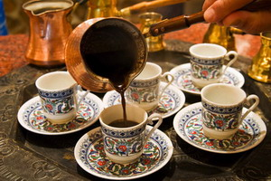

История кофе
История открытия кофе
По данному вопросу существует несколько теорий. История открытия свойств кофе очень интересна.Одна из теорий гласит, что в гористой части Эфиопии жил пастух, обративший своё внимание на подозрительную резвость коз, которые питались листьями и плодами с кустов, растущих на склонах гор.
Работа пастуха очень утомительна и люди часто засыпали когда пасли стадо, поэтому жители последовали примеру коз и начали жевать листья и мякоть плодов кофейного дерева. На вкус они оказались очень горькие. Соответственно у Африканцев возникло желание улучшить вкусовые качества продукта. Методом проб и ошибок они научились сушить и обжаривать семена плодов, измельчать и заваривать получившийся порошок.
Роль арабов в истории открытия кофе 
Распространение имеет и другая теория открытия свойств кофейных зерен. Некоторые историки полагают, что жители Эфиопии не употребляли сами зерна плодов, а использовали кожуру спелых ягод, выдавливая из нее сок, иногда давая ему перебродить, получая тем самым алкогольный напиток -«кахве». Наряду с мякотью Африканцы употребляли листья растения. Они попросту их разжевывали или заваривали. А зерна растения впервые начали заваривать арабы. Сложно сказать когда именно кофе пересек Баб-эль-Мандебский пролив и попал из Эфиопии на Аравийский полуостров, но по теории, арабские купцы в 800-х годах н. э. завезли семена в Йемен из королевства Каффа, которое находилось на юго-западе Эфиопии. Название королевства могло послужить прообразом современного названия «кофе». Однако нужно добавить, что в настоящее время не существует географической единицы с названием «Каффа». Королевство существовало с конца 14-го века по конец 19-го, а с 1943 по 1994 год в Эфиопии создали систему провинций и именно столько просуществовала провинция Каффа, то есть всего 52 года. После очередного разделения страны провинция вошла в состав двух регионов: «Область Народов Южной Эфиопии»(SNNPR) и Оромия.
Версии происхождения названия «кофе»
И хотя есть множество легенд о первом приготовлении арабами кофейного напитка из зерен , исторически это всегда было связано с суфиями - мусульманами-мистиками, пившими кофе для того, чтобы отгонять сон во время долгих ночных молитв.
Легенда о лекаре
Многие могли слышать легенду о шейхе Омаре. Он был священником и лекарем, а жил отшельником в пещере. Очень часто его взору попадалась необычайной красоты птица, издававшая манящие трели. Омар попытался изловить ее, но вместо птицы в руках его остались лишь благоухавшие цветки и красные плоды. Омар использовал их как приправу для приготовления отваров, которыми он лечил больных, приходивших к нему. На удивление, зелья оказались целебными, и весть о них пошла по всей Аравии. Омара провозгласили святым, а в Мекке в его честь возвели мечеть.
В заключение
История открытия кофе столь же удивительна, как и сами свойства этого удивительного напитка и растения. Кофе в настоящее время является неотъемлемой частью культуры большинства народов мира.
Ссылки
TODO: links